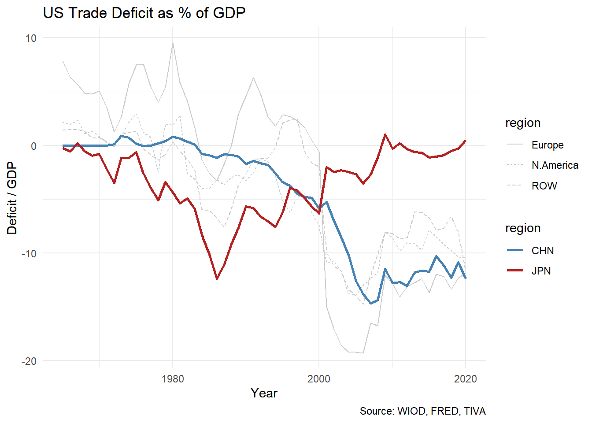
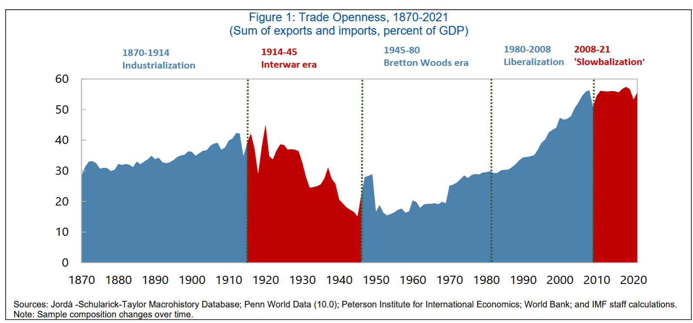
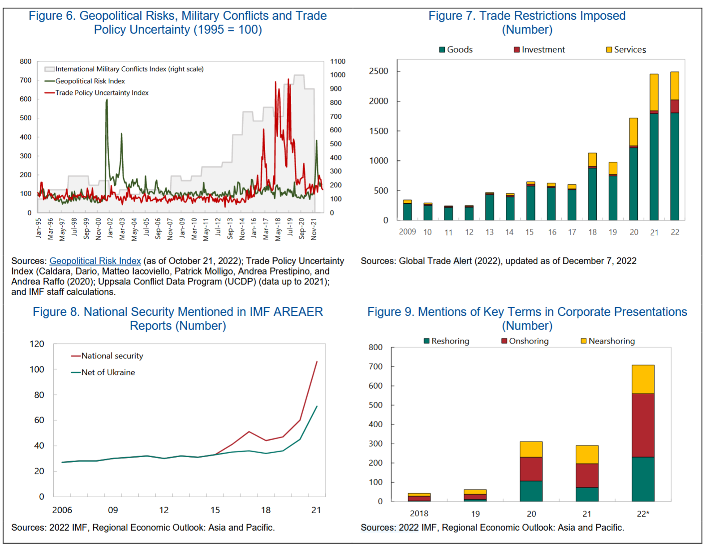
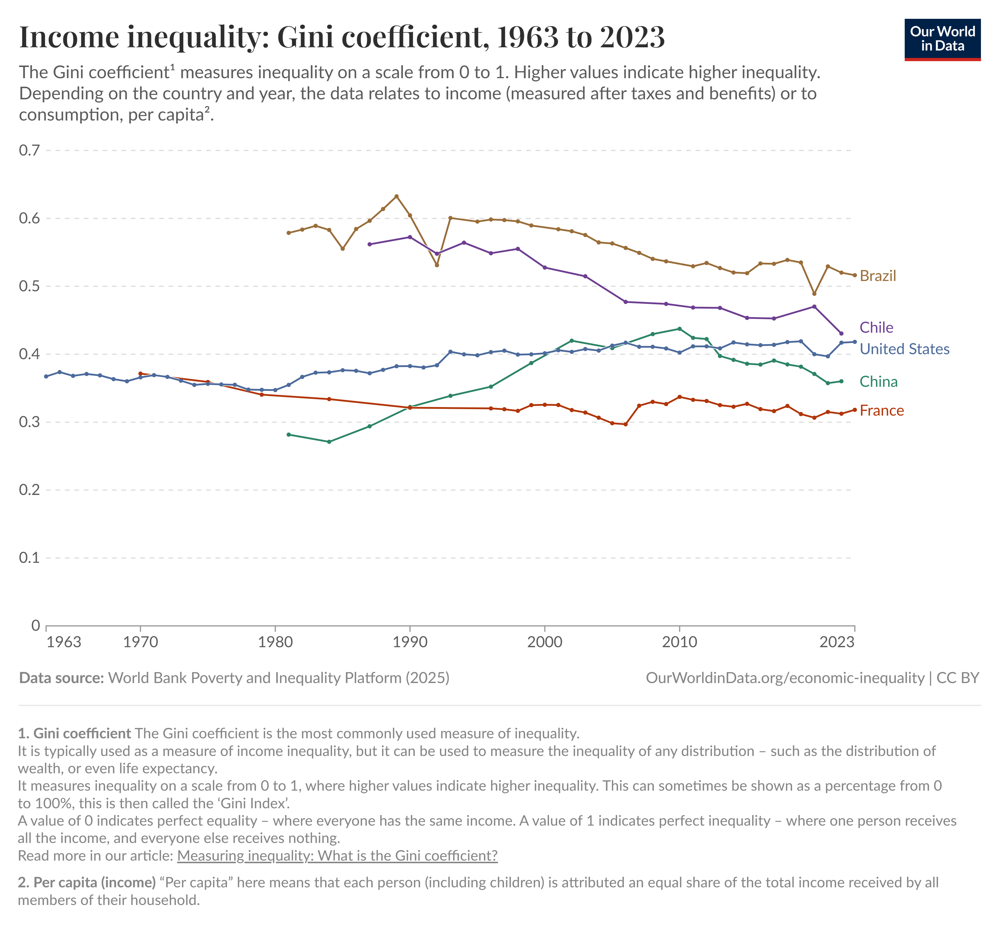
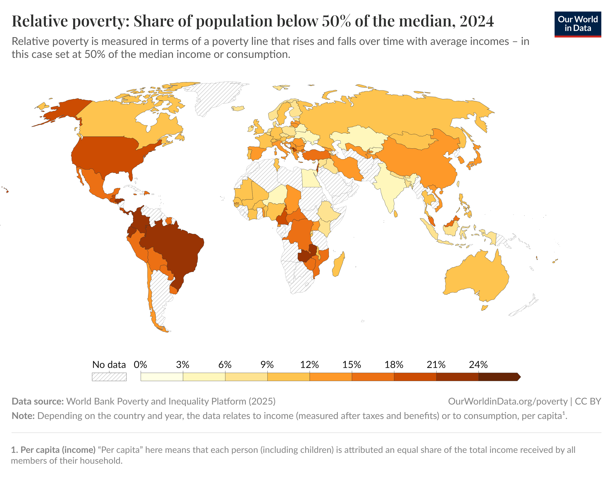
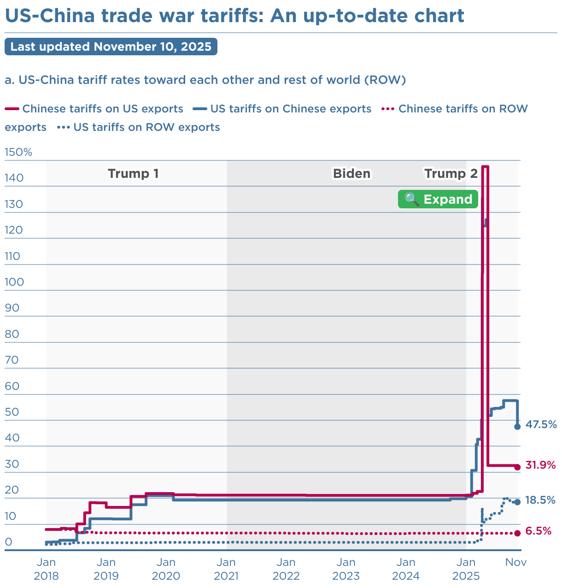
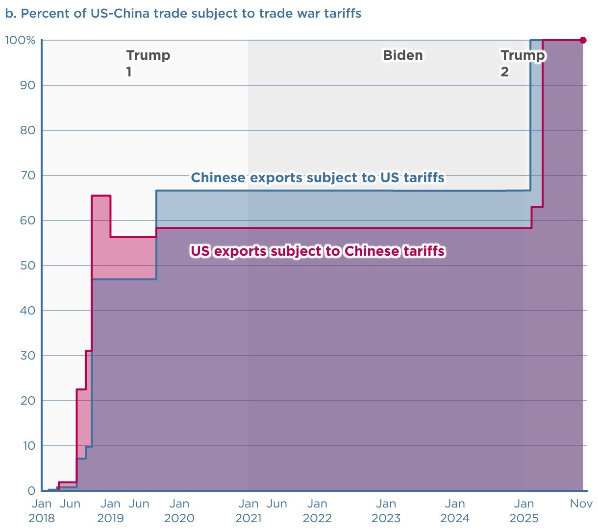
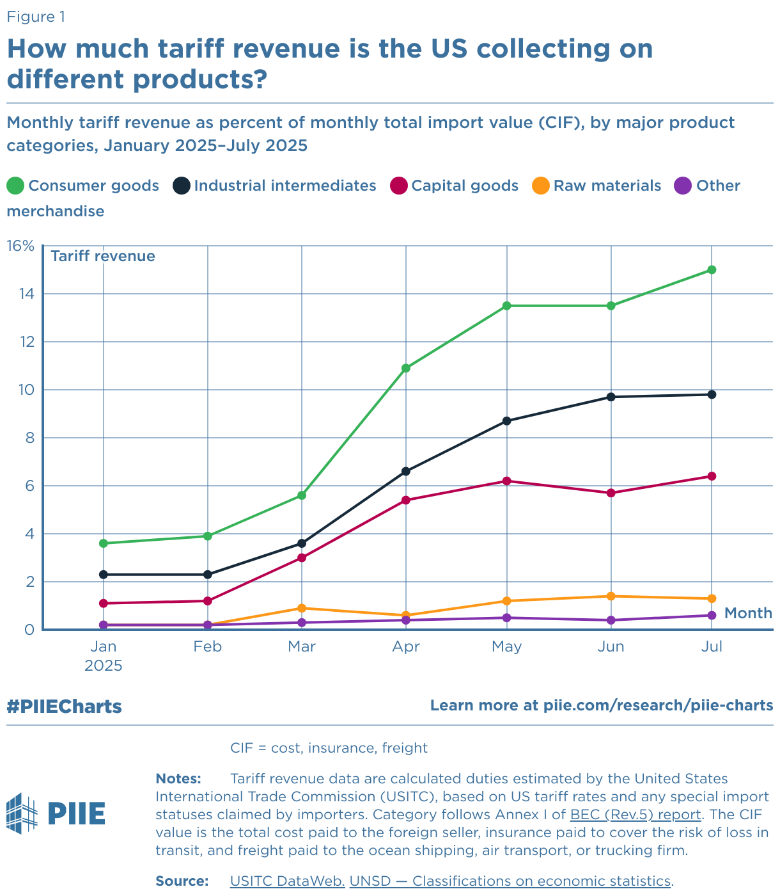
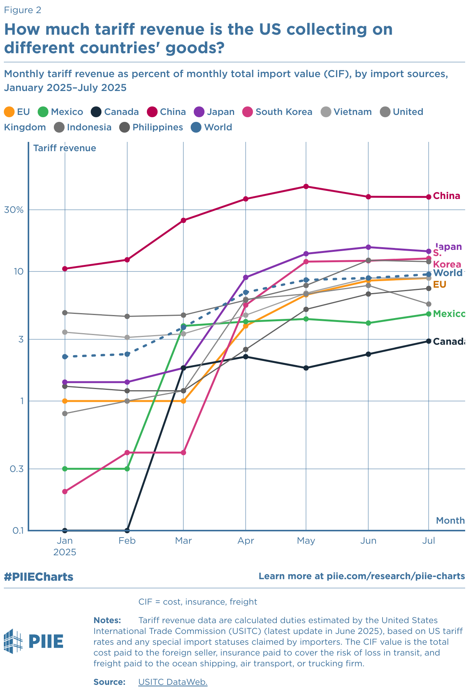
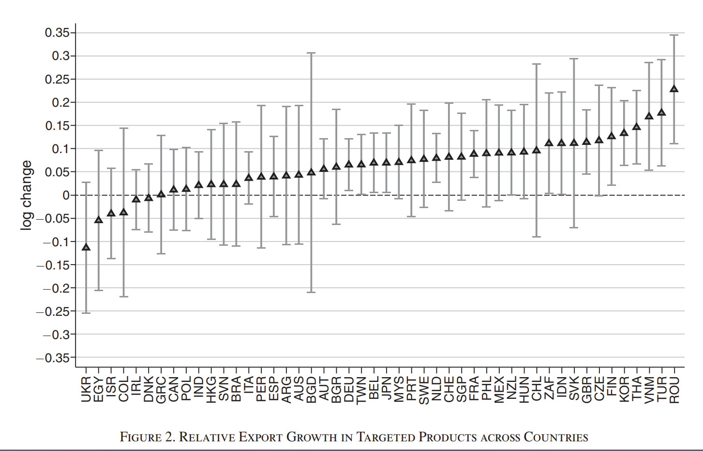

Trade Conflicts
Overview
- Gain from trade
- Historical case: US–Japan (1970s–1990s)
- Current case: US–China (2018–present)
- Lessons for global supply chains
Gain from trade
National welfare generally increases: higher production frontier, more variety of goods
Uneven distribution effects
- import competing sectors vs export sectors
- small firms vs large firms
- skilled workers vs unskilled workers
political interests
Globalization

Fragmentation

US trade deficit
US income inequality


US-Japan trade conflicts (1)
- 1950s–1980s: US industry complaints
- Cotton products in 1950s, quantity control
- Other textiles in 1960s, VER
- Steel, price control (1970s), quantity (1980s)
- TV sets, anti-dumping surcharge (1970s), VER (1979)
- Machine tools, price controls (1980s), VER (1986)
US-Japan trade conflicts (2)
- 1980s~: structural barriers (capital control, keiretsu)
- Automobile, VER (1981~1994, 3 renewals): price up, FDI
- Access to Japanese markets: beef, oranges quotas increased
- Semiconductor Agreement 1986 (anti-dumping, market access 20%)
- Super-301: unfair trading partner
- Structural Impediments Initiative (SII) (1989-90)
- Focus on keiretsu, distribution, standards
- Plaza Accord (1985): coordinated dollar depreciation
- Semiconductor: retaliatory tariff (1987, 300%), renewed in 1991, adding Korea in 1996
- Yen appreciation: Japanese FDI boom, Asian value chains Ref: Feenstra (1984) Vogel (1996) Ahearne et al. (2003)
US-Japan Conflicts (3)
- End of conflicts
- Stagnation of Japanese business in 1990s and 2000s
- Other economies in East Asia growing
- Channels of negotiations
- WTO’s Dispute Settlement Mechanism (anti-dumping, safeguards)
- Emergence of regional FTA
China’s Rise and Integration
- WTO accession 2001
- Deep GVC integration with the U.S.
- The “China Shock” on U.S. workers (Autor, Dorn & Hanson, 2016):
- Reductions in both employment and wage levels, a steep drop in households’ average earnings
- Import competition explains 25% aggregate decline in US manufacturing employment
US-China Trade Conflicts (1)
2018–2019: sectoral tariffs and Chinese retaliation
- Safeguards on washing machines and solar panels (Jan 2018)
- Steel and aluminum, Section 232: 25% / 10% (Mar 2018)
- Section 301 (IP, forced technology transfer):
- List 1–2: $50B (Jul–Aug 2018)
- List 3: $200B, 10% → 25% (Sep 2018 / May 2019)
- List 4A: ~$120B at 15% (Sep 2019)
- China’s retaliation: ~$110B of US goods, targeting soybeans, pork, autos
US-China trade conflicts (2)
Structural and tech issues
- Structural demands: state subsidies, SOEs, forced tech transfer
- Phase One deal (Jan 2020): purchase commitments
- Tech controls (cf. Semiconductor Agreement):
- ZTE (2018), Huawei Entity List (2019)
- Advanced-chip export controls (Oct 2022), CHIPS Act (2022)
- China’s counter-tools: gallium/germanium (2023), rare earths
US-China Tariff (1)


- Section 301 tariffs on ~$370B imports
- China’s retaliation
- Expansion into tech & national security
US-China Tariff (2)


Effects on US’ Price and Consumption
- Import and retaliatory tariffs
- declines in imports and exports and import variety
- complete pass-through of tariffs to consumer
- increase tariff revenue
- gains to domestic producers
- Net aggregate real income loss 0.04% of GDP (Fajgelbaum et al., 2020)
Trade Diversion & Supply Chain Shifts

- Countries that operate along downward-sloping supplies whose exports substitute (complement) the United States and China are among the larger (smaller) beneficiaries of the trade war
Channels of resolution
| US–Japan | US–China | |
|---|---|---|
| Multilateral | WTO dispute settlement, regional FTAs | WTO sidelined |
| Bilateral | SII talks, Semiconductor Agreement | Phase One, truces, Board of Trade |
| Outcome | Conflict faded as Japan stagnated | No off-ramp yet; truce renewed repeatedly |
Comparing the two episodes
| Issue | US–Japan (1970s–90s) | US–China (2018– ) |
|---|---|---|
| Rivalry | Market share | Tech + geopolitics |
| Triggering sectors | Textiles, steel, TVs, autos, chips | Steel, solar, Section 301 lists, chips |
| Tools | VERs, quotas, yen revaluation | Tariffs, export controls, Entity List |
| Structural demands | Keiretsu, distribution (SII) | Subsidies, SOEs, tech transfer |
| Firm responses | Japan FDI → US/Asia | China FDI → SE Asia |
| Effects | Asian supply chains | Diversification |
Takeaways
- Trade restrictions: production relocation
- Trade policy alone would be distortionary: it shifts trade flows rather than fixing the underlying imbalance
- GVCs become sticky once established
References
- Ito and Hoshi (2020) Chapter 13
- Autor, D. H., Dorn, D., & Hanson, G. H. (2013). The China Syndrome: Local Labor Market Effects of Import Competition in the United States. American Economic Review, 103(6), 2121–2168.
- Fajgelbaum, P. D., Goldberg, P. K., Kennedy, P. J., & Khandelwal, A. K. (2019). The Return to Protectionism (Working Paper No. 25638). National Bureau of Economic Research.
- Fajgelbaum, P., Goldberg, P., Kennedy, P., Khandelwal, A., & Taglioni, D. (2024). The US-China Trade War and Global Reallocations. American Economic Review: Insights, 6(2), 295–312.
- Amiti, M., Redding, S. J., & Weinstein, D. E. (2019). The Impact of the 2018 Tariffs on Prices and Welfare. Journal of Economic Perspectives, 33(4), 187–210. - Aiyar, S., Ilyina, A., Chen, J., Kangur, A., Trevino, J., Ebeke, C., Gudmundsson, T., Soderberg, G., Schulze, T., Kunaratskul, T., Ruta, M., Garcia-Saltos, R., & Rodriguez, S. (2023). Geo-Economic Fragmentation and the Future of Multilateralism. Staff Discussion Notes, 2023(001), 1.
- Data Link
- https://www.piie.com/research/piie-charts/2019/us-china-trade-war-tariffs-date-chart
- https://www.piie.com/research/piie-charts/2025/trumps-tariff-revenue-tracker-how-much-us-collecting-which-imports-are